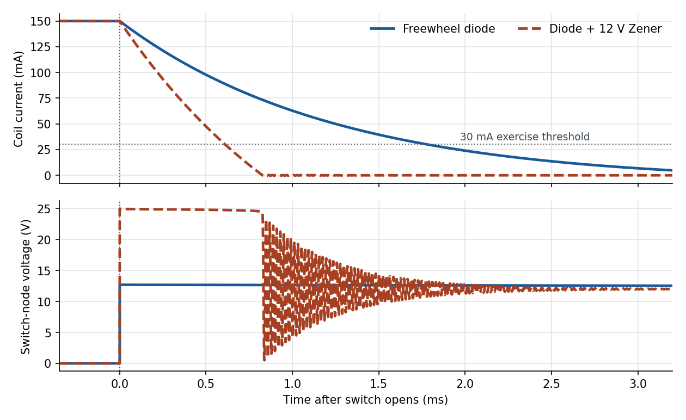

Compare two ways to switch off a robot valve coil
A valve output can switch off electrically while coil current still holds the actuator. Compare two current paths and see how a shorter electrical release time uses more switch-voltage headroom.

Photo by Sarah Adrita, scaled. Original photograph · CC BY-SA 4.0.

Watch. Observe how the probe changes a fast edge. Keep that effect separate from the clamp’s effect on the solenoid voltage. w2aew · Oscilloscope probe ground lead length and signal quality.
Predict the off-state current path
Download the ngspice circuit. It has two separate 100 mH, 80 Ω windings and identical low-side switches, both fed by an ideal 12 V rail. Trace conventional current from the rail through the winding and switch before turn-off. When the switch opens, the winding current still flows toward the switching node. It returns to the rail through the clamp.
Freewheel branch switch node → diode forward → +12 V rail
Faster branch switch node → diode forward → Zener in breakdown → +12 V railIn the second branch the clamp sits across the whole winding and the switch node rises by roughly the clamp voltage above the rail. The Zener diode conducts in reverse when the switch opens. The ordinary series diode blocks current from the rail through the clamp when the switch is on. Use the netlist to locate its anode and both cathodes. The winding energy is approximately ½LI², about 1.12 mJ just before turn-off in this simulation. The winding and clamp dissipate it as current decays. Texas Instruments · Inductive load discharge paths.
Measure current threshold and switch voltage
ngspice -b coil-release.cirUse the gate’s falling 2.5 V crossing as time zero. The exercise treats 30 mA as a release-current threshold. Read free_delay_ms and fast_delay_ms from the simulation, and compare them with the peak voltage from drain to ground in each branch. The nominal result below comes from ngspice 42.

Approximate the decay while the clamp can be treated as a constant voltage Vc opposing current. The loop gives L dI/dt + RI = −Vc. The time to Ith is L/R × ln[(I0 + Vc/R)/(Ith + Vc/R)]. Use 0.7 V or 12.9 V for a first estimate. The simulator uses current-dependent diode voltages. ngspice 42 · Transient measurements.
Re-run at a supply and winding corner
Copy the netlist and set the first parameters to supply=13.2 resistance=70 inductance=120m. Predict which curve changes most. For this exercise, the model has a 1.00 ms threshold deadline and a 25.0 V peak limit. Record each branch’s disposition at nominal and corner conditions.
Check the nominal and corner results
| Model condition | Freewheel time and peak | Diode plus Zener time and peak |
|---|---|---|
| 12.0 V, 80 Ω, 100 mH | 1.781 ms, 12.71 V | 0.610 ms, 24.97 V |
| 13.2 V, 70 Ω, 120 mH | 2.773 ms, 13.92 V | 0.951 ms, 26.21 V |
The freewheel branch misses the time limit both times. The faster branch passes both nominal model limits with only 0.03 V of modeled voltage headroom. It exceeds the voltage limit at the tested corner. The corner begins near 188 mA and stores about 2.13 mJ.
Connect electrical release to station proof
In a station, a current crossing can explain a delayed valve. The actual valve must move, air must flow, and the tool or part must reach its verified position. Specify what you would timestamp on one capture of the command, coil current and independent destination signal. Use the actual driver’s repetitive stress limits, clamp tolerance, harness effects and duty cycle to define its electrical test. The model uses an ideal switch and a fixed inductance and has no armature, pneumatic load or receiver latency.
P147 · Follow the release command through to part proof